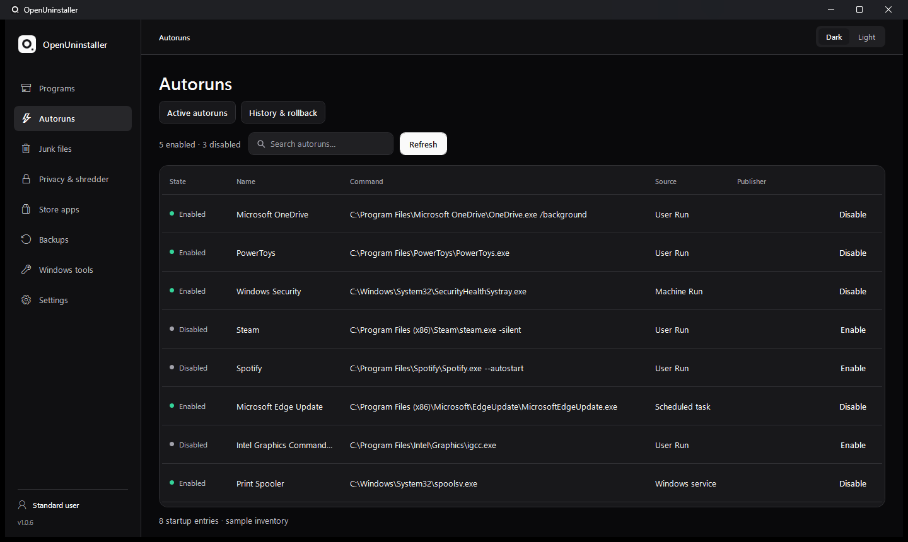
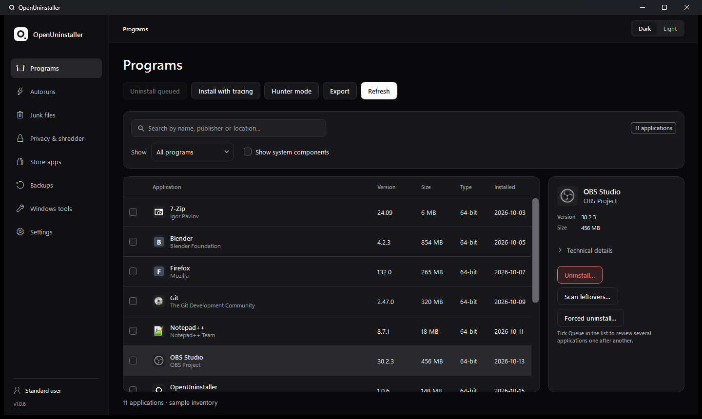
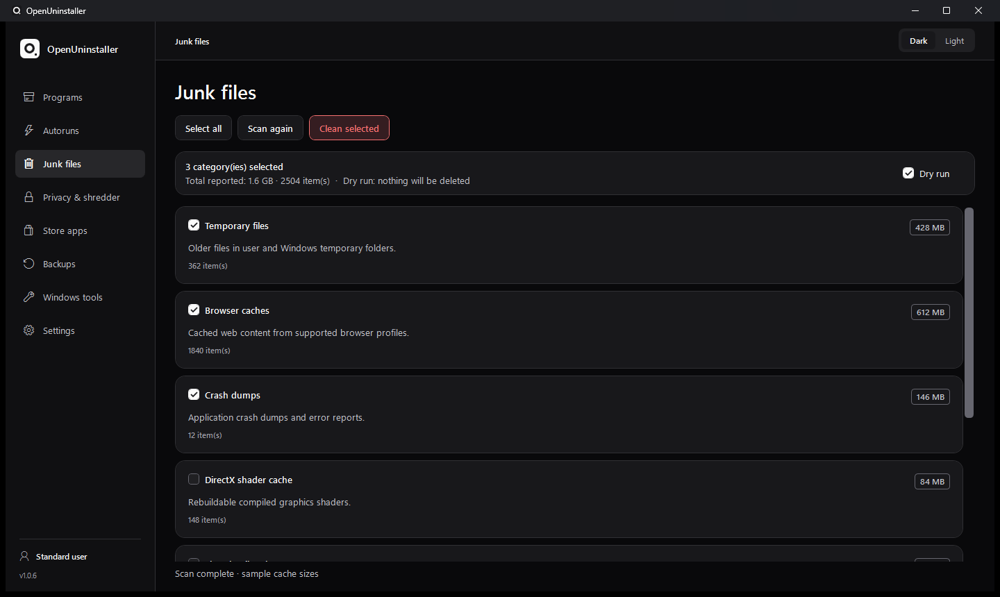
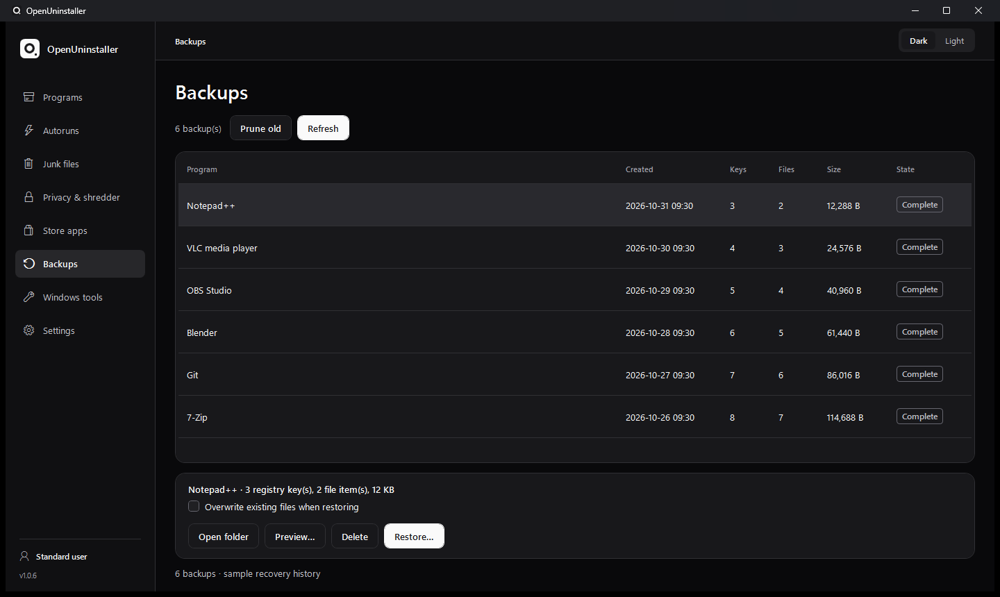
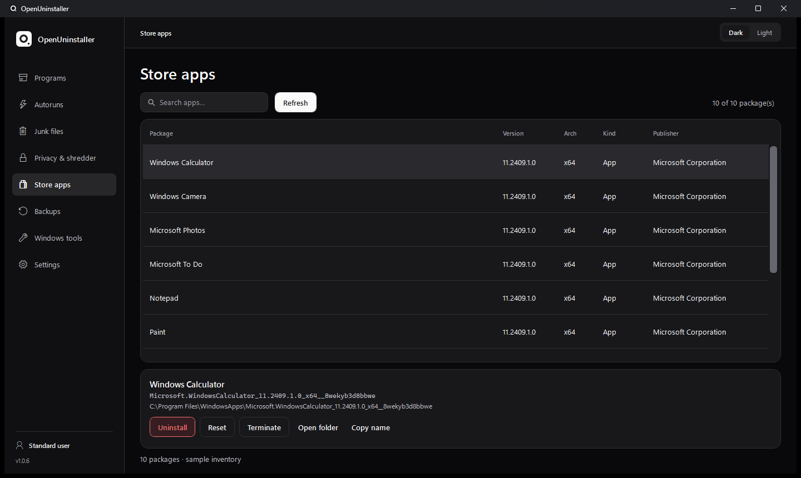
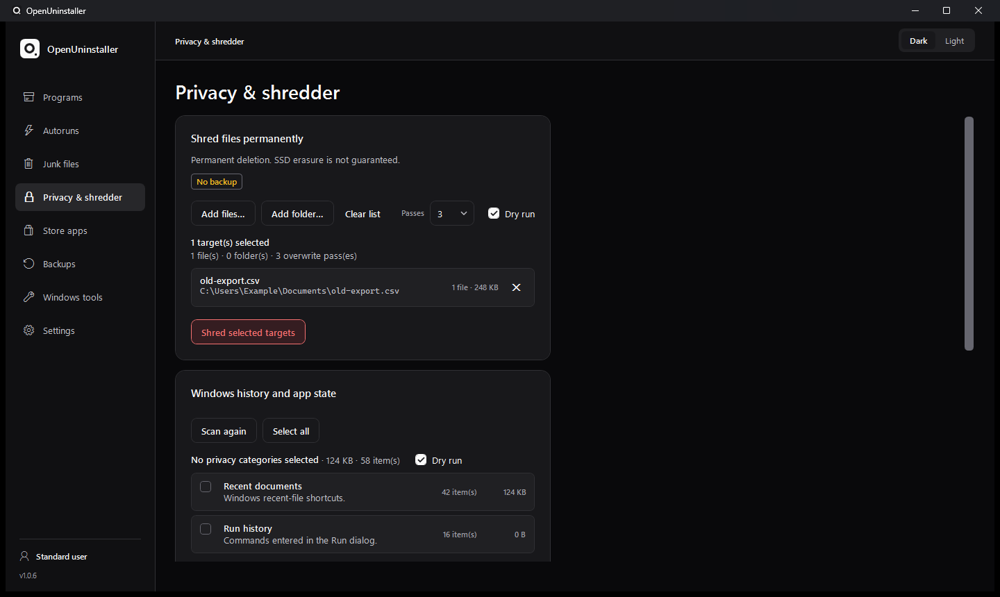
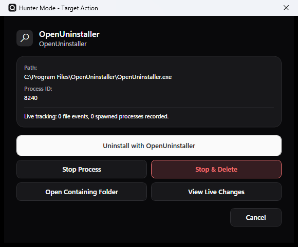

See what runs at startup
Inspect startup entries, services, and scheduled tasks. Disable supported entries and restore their previous state when needed.
OpenUninstaller removes Windows apps and lets you review leftover files and registry entries before you choose what to delete.
Windows 10 (1809+) and 11 · x64

Run the app’s own uninstaller, then review the evidence behind each leftover the scan finds. You choose which items to remove.
Find an app by name, publisher, or location. Check its details, then launch its registered uninstaller.
Review remaining files, shortcuts, and registry entries. See what matched and how confident the scan is about each item.
OpenUninstaller backs up approved items before removing them. If an item’s backup fails, the app leaves it in place.
An installation trace can tie a file or registry key to an app. Without a trace, the scan looks for clues such as names and locations. You can inspect the evidence before selecting an item.
Explore startup entries, temporary files, backups, Store apps, and privacy tools. The screenshots use sample data.

Inspect startup entries, services, and scheduled tasks. Disable supported entries and restore their previous state when needed.

Scan supported cache and temporary-file locations. Review the results by category and use a dry run to check what would be removed.

Open the backups taken during cleanup. Check what each backup contains and preview where its files and registry entries will be restored.

Inspect installed Store packages, open their locations, and reset or uninstall supported apps.

See Windows history and supported browser data before clearing it. The same screen also provides separate tools for file shredding and wiping free space.
Point Hunter Mode at an open window to see its process and executable. When it finds an installed app that matches, you can open that app’s uninstall flow.
Read the Hunter Mode guide
Record what an installer changes, or use the included command-line tool to inspect apps and backups.
Capture file and registry changes around an installation so you can refer to them during a later cleanup. Export a trace as an .outrace.zip bundle or import one to review.
Use oucli to filter the program inventory, scan for leftovers, and preview backups from a terminal.
oucli list --filter "Example Studio"Common questions about scanning, backups, and Windows permissions.
Yes. Select an application in Programs and choose Scan leftovers. You can review the results before deciding whether to remove anything.
Open Backups to preview and restore captured uninstall leftovers. Privacy history cleanup and file shredding are irreversible.
The app runs locally. It has no telemetry and makes no automatic network requests. External uninstallers and Windows utilities can have their own network behavior.
A standard Windows account is enough for user-scoped operations. Machine-wide changes and management of the optional maintenance service require administrator rights.
Windows 10 (1809+) and 11 · x64. Both packages include the .NET runtime.